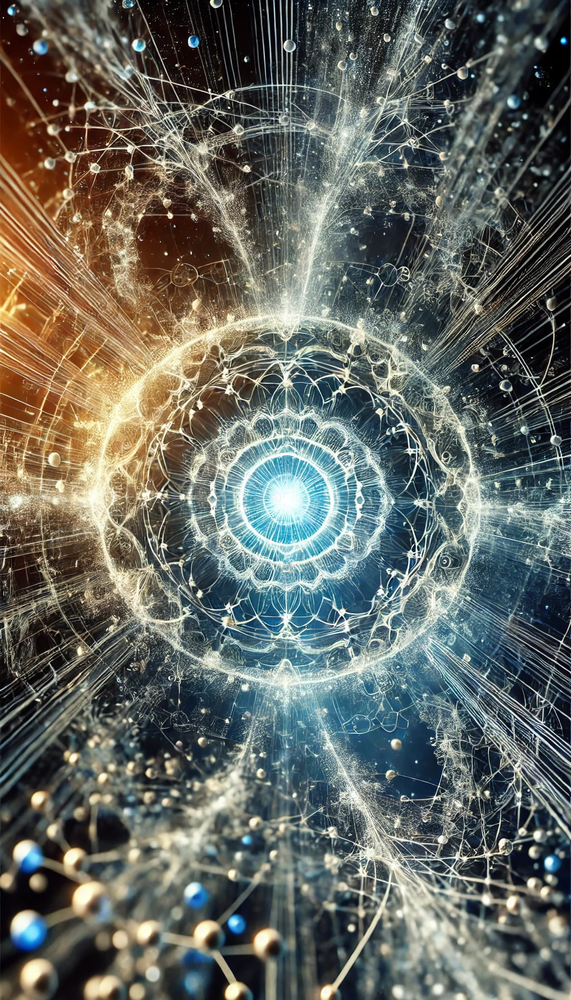
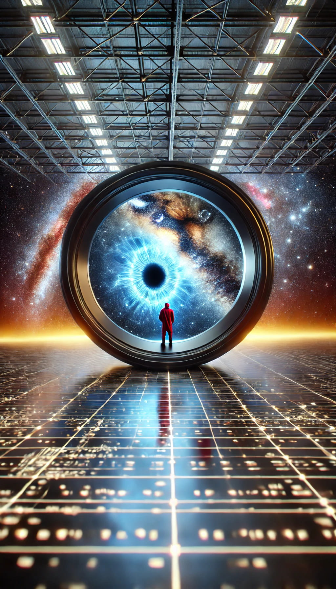

The Distinction Framework: Consciousness as the Foundation of Reality
1. Introduction
The nature of consciousness and its relationship to physical reality has long been a central problem in philosophy of mind and metaphysics. Traditional approaches have often attempted to explain consciousness as an emergent property of complex physical systems, leading to seemingly intractable issues such as the hard problem of consciousness. This paper proposes an alternative perspective: that consciousness is not an emergent property, but the fundamental and functionally necessary basis of reality itself, responsible for creating the distinctions that give rise to our perceived universe.
The Distinction Framework builds upon and extends idealist traditions, which have long argued for the primacy of mind or consciousness in the nature of reality. The framework goes beyond traditional idealism by arguing for the functional necessity of consciousness in the creation of any definable reality. This approach has the potential to resolve long-standing debates in philosophy of mind, including the hard problem of consciousness and the mind-body problem, while also offering new perspectives on quantum mechanics and the nature of information.
1.1 Background
The study of consciousness has been approached from various angles throughout history. Philosophical traditions such as idealism have long argued for the primacy of mind or consciousness in the nature of reality. Idealism posits that the fundamental nature of reality is based on ideas, minds, or consciousness, rather than on physical substances.
In contrast, materialist approaches have sought to explain consciousness as an emergent property of physical systems, leading to ongoing debates about the relationship between mind and matter. This materialist view has dominated much of modern scientific thinking, but has struggled to provide a satisfactory explanation for the subjective experience of consciousness.
In recent decades, the hard problem of consciousness has brought into sharp focus the difficulty of explaining subjective experience in terms of objective physical processes. This has led to a proliferation of theories attempting to bridge the explanatory gap between physical processes and conscious experience.
The Distinction Framework presented in this paper seeks to build upon the idealist tradition while addressing the shortcomings of both idealist and materialist approaches. By positioning consciousness as not just primary but functionally necessary for the existence of reality, we offer a new perspective that may help resolve long-standing philosophical dilemmas.
Universe 00110000
2. The Argument for the Distinction Framework
The Distinction Framework rests on two core propositions: (1) the necessity of distinction for meaningful existence, and (2) the unique role of consciousness in making fundamental distinctions. This section will elaborate on these propositions and construct a formal argument for the framework.
2.1 The Necessity of Distinction
For anything to exist in a meaningful sense, it must be distinguishable from something else. This necessity can be understood through several complementary lenses:
2.1.1 Logical Necessity
From a logical perspective, the concept of existence implies differentiation. For an entity A to be said to exist, it must be possible to conceive of its non-existence, or of something that is not A. Without this possibility of differentiation, the concept of A's existence becomes meaningless.
Formally:
Let E(x) denote "x exists"
For any x, E(x) ⇒ ∃y(y ≠ x)
This logical relationship between existence and distinction is reflected in the law of identity in classical logic, which states that each thing is identical with itself and distinct from other things.
2.1.2 Information-Theoretic Perspective
In information theory, the concept of information is fundamentally tied to distinction. A bit, the basic unit of information, represents a distinction between two possible states (0 or 1). Without this basic distinction, no information can be encoded or transmitted (Shannon, 1948).
More formally, the information content of a message can be defined as:
I(x) = -log₂P(x)
Where P(x) is the probability of a particular message x. This definition inherently relies on the ability to distinguish between different possible messages.
This information-theoretic perspective extends beyond abstract mathematics to physical reality itself. The structure and behavior of matter and energy in the universe can be understood as patterns of information, which in turn are based on fundamental distinctions.
2.1.3 Quantum Mechanical Considerations
In quantum mechanics, the act of measurement is crucial, forcing a system to transition from a superposition of states to a single, definite outcome. This transition can be viewed as a form of distinction-making, highlighting a fundamental link between consciousness and the quantum realm.
The measurement problem, a central puzzle in quantum mechanics, questions why measurement yields definite outcomes when quantum theory predicts probabilistic superpositions. The Distinction Framework offers a novel perspective: conscious observation, with its inherent capacity for distinction-making, may be the key to resolving this paradox.
This suggests that consciousness plays a more active role in shaping reality than traditionally assumed. By making distinctions, consciousness collapses the wave function, transforming potentiality into actuality. This aligns with interpretations of quantum mechanics, such as the Von Neumann-Wigner interpretation, which also emphasize the role of consciousness in the measurement process.
This perspective also raises intriguing questions about the relationship between consciousness and the fundamental fabric of reality. If conscious observation is crucial for resolving quantum indeterminacy, it suggests a deeper connection between the observer and the observed, potentially blurring the lines between epistemology and ontology.
2.2 Consciousness as the Basis of Distinction
The second core proposition of the Distinction Framework is that consciousness is the only phenomenon capable of making distinctions at a fundamental level. This proposition expands upon idealist philosophies by arguing not just for the primacy of consciousness, but for its functional necessity in creating reality as we know it.
Universe 00110000
2.2.1 Defining Consciousness
Consciousness is a state of awareness characterized by subjective experiences and the capacity for self-reflection. Fundamentally, consciousness involves:
- Self-Model: An internal representation of the self and its states, which includes self-awareness - the ability to recognize and process information about one's own existence and mental states. This self-model serves as the foundation for conscious experience and self-reflection.
- Predictive Intentionality: The capacity to anticipate and direct attention towards future states of both the self and the environment. This combines the predictive aspect with intentionality, recognizing that consciousness is inherently forward-looking and about something.
- Qualia: The subjective, qualitative aspects of conscious experiences that give rise to the felt sense of what it's like to have a particular experience.
This definition is not limited to human-like cognition but encompasses a spectrum of awareness, allowing for the possibility of consciousness at various levels of complexity throughout the universe.
2.2.2 The Unique Role of Consciousness in Distinction-Making
We argue that consciousness, as defined above, is uniquely capable of making fundamental distinctions for the following reasons:
- Self-Model as Primary Distinction: The self-model provides the most fundamental distinction between self and non-self, upon which all other distinctions are built. This primary distinction is inherently conscious and forms the basis for all subsequent distinctions.
- Predictive Intentionality: The capacity to anticipate and direct attention towards future states allows consciousness to create distinctions not just in the present moment but across time. This forward-looking aspect is crucial for creating and maintaining complex structures in the universe.
- Qualia and Qualitative Distinctions: The subjective, qualitative aspects of conscious experiences (qualia) are not just the basis for making meaningful distinctions, but are necessary for the very existence of distinctions. Without qualia, there would be no distinctions at all, as the very act of distinguishing requires a subjective, felt experience of difference. In other words, qualia don't merely provide significance to pre-existing differences; they are the fundamental basis for the emergence of any distinctions whatsoever.
- Integrative Capacity: The unity of consciousness, reflected in the coherent self-model and the integration of predictive intentionality with qualia, allows for the creation of complex, multi-faceted distinctions that give rise to the rich structure of our experienced reality.
2.3 Formal Argument for the Distinction Framework
Given the above propositions, we can construct a formal argument for the Distinction Framework:
- For anything to exist in a meaningful sense, it must be distinguishable from something else. (Premise)
- The act of distinguishing requires a distinction-maker. (Premise)
- Consciousness, with its self-model, predictive intentionality, and qualia, is the only phenomenon capable of making distinctions at a fundamental level. (Premise)
- Therefore, consciousness is necessary for the existence of anything in a meaningful sense. (From 1, 2, and 3)
- The universe exists in a meaningful sense. (Premise)
- Therefore, consciousness is necessary for the existence of the universe as we know it. (From 4 and 5)
This argument suggests that consciousness is not merely an emergent property or even just a fundamental aspect of reality (as in traditional idealism), but a functionally necessary component for the existence of reality itself.
Potential objections to this argument might include claims that non-conscious systems can make distinctions, or that the argument conflates epistemological and ontological distinctions. However, we contend that apparent distinctions made by non-conscious systems ultimately derive their meaning from conscious interpretation, and that at the most fundamental level, there is no difference between knowing (epistemology) and being (ontology).
The empirical testability of this framework, while challenging, could potentially be approached through experiments investigating the relationship between conscious observation and quantum phenomena.
3. Implications and Paradigm Shift
If the Distinction Framework holds true, it represents a significant paradigm shift in our understanding of consciousness and reality. Some key implications include:
- Resolution of the Hard Problem: By making consciousness, with its inherent qualitative aspects (qualia), fundamental to the existence of anything we could discuss or experience, this view potentially resolves the hard problem of consciousness.
- Unification of Epistemology and Ontology: The predictive intentionality aspect of consciousness suggests that the act of knowing (predicting and distinguishing) becomes synonymous with the act of bringing into being, suggesting a deep unity between epistemology and ontology.
- Redefinition of Physical Reality: Rather than consciousness emerging from physical processes, physical reality could be understood as patterns of distinction within consciousness, shaped by the predictive and intentional aspects of consciousness. This expands upon idealist notions by providing a functional role for consciousness in the creation of physical reality.
- New Approach to Fundamental Physics: This framework suggests that any complete theory of physics must incorporate consciousness, with its self-modeling and predictive capacities, as a fundamental aspect, not as an emergent phenomenon.
- Technological Implications: This framework could inform new approaches to artificial intelligence and cognitive computing, potentially leading to novel architectures that more closely mimic the distinction-making processes of consciousness, including self-modeling and predictive capacities.
4. Conclusion
The Distinction Framework presented in this paper offers a radical reimagining of the nature of reality, consciousness, and existence itself. By positing consciousness as the fundamental and functionally necessary basis of distinction and existence, we provide a new perspective on some of the most persistent problems in philosophy and science.
This framework challenges us to reconsider our most basic assumptions about the nature of reality, matter, time, and our own existence. It suggests a universe that is fundamentally conscious, inherently meaningful, and filled with potential for exploration and growth. By expanding upon traditional idealist philosophies, we offer a view that not only posits the primacy of consciousness but demonstrates its functional necessity in the creation of reality as we know it.
As we continue to grapple with the deepest questions about the nature of reality and consciousness, the Distinction Framework provides a compelling new direction for inquiry, inviting us to see consciousness not as an emergent accident of complex systems, but as the very foundation of existence itself. This perspective bridges the gap between ancient wisdom traditions, modern idealist philosophy, and cutting-edge scientific inquiry, offering a holistic approach to understanding the nature of reality and our place within it.